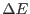

XMM-Newton Science Analysis System
evigweight (evigweight-1.7) [xmmsas_20170112_1337-16.0.0]
Assumptions
- The method outlined above is
valid, if the vignetting effect is constant within one PSF
(this is OK for XMM) and
remains the same for energies differing by the order of 
(this is OK for XMM except at the very lowest energies).
- The current version ignores the PATTERN value. This results
in vignetting being computed for PATTERN=0. This is all right
since the pattern distribution is approximately the same for all CCDs.
XMM-Newton SOC/SSC -- 2017-01-12